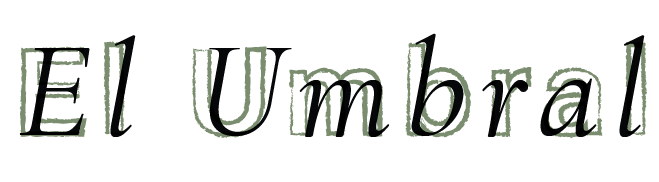

Algunas puertas se abren para mirar.
Otras para empezar algo.
Después de recorrer el patio, cada hallazgo abre una nueva posibilidad.
Podés iniciar una conversación con nosotros o descubrir Rastro, nuestra herramienta para diseñadores.
Rastro
Una aplicación para diseñadores que registra las huellas del proceso creativo.